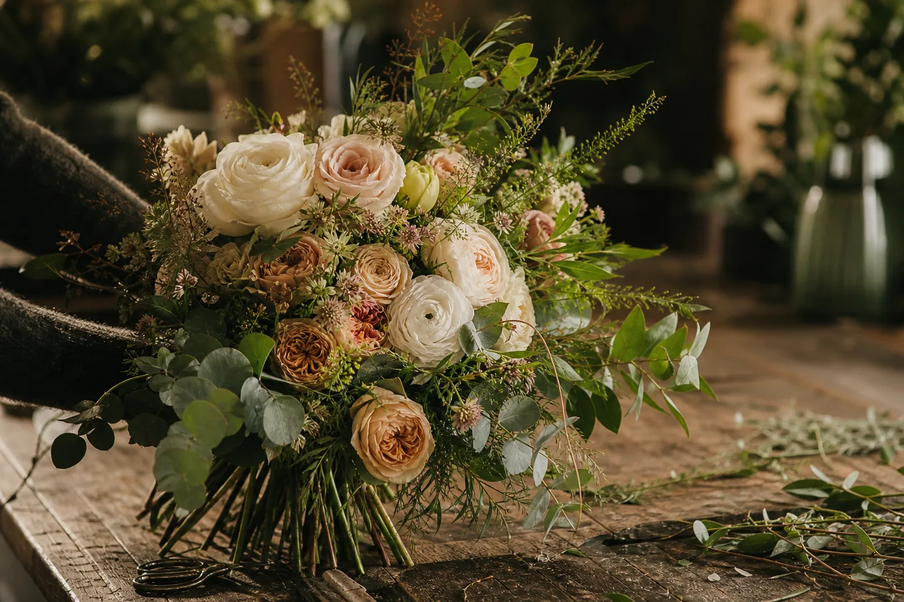

Nacrée Botanique
Fleuriste inspirée par la saison à Villeneuve-sur-Lot
Des fleurs choisies avec soin, composées à la main et adaptées à chaque intention.
Villeneuve-sur-Lot
Lot-et-Garonne
Dans l'atelier
Chaque bouquet commence par une couleur, une saison ou une histoire à raconter. À l'atelier, chaque bouquet est composé à la main selon vos envies.
Bouquet spontané, composition délicate ou décor d'événement : chaque création est imaginée pour la personne qui la recevra.
Des fleurs pour le quotidien
Bouquets de saison, fleurs séchées et compositions sur mesure : la sélection évolue au fil des arrivages, des couleurs et des envies.
Pour les moments qui comptent, l'atelier imagine aussi des créations pour les mariages, naissances, anniversaires, hommages et rendez-vous professionnels.
Retrait et livraison locale : les modalités sont confirmées avec chaque commande selon le lieu et la disponibilité des fleurs.
Parler de votre bouquetUne création pour chaque moment
Bouquets du quotidien
Un bouquet de fleurs fraîches adapté à votre budget, pour remercier, célébrer ou simplement faire plaisir.
Imaginer mon bouquetMariages
Bouquet, boutonnière et décor floral construits autour de votre palette, de votre lieu et de l'atmosphère souhaitée.
Parler de l'événementNaissances & cadeaux
Des tons tendres ou lumineux, accompagnés d'un petit mot, pour marquer une naissance, un anniversaire ou une visite.
Préparer une attentionHommages
Des compositions sobres et délicates, préparées avec soin pour un dernier hommage ou un message personnel.
Échanger avec l'atelierProfessionnels
Des compositions pour vos comptoirs, bureaux, vitrines ou tables, de façon ponctuelle ou renouvelées régulièrement.
Demander une propositionLivraison & commandes
Les commandes sont préparées sur mesure après un échange sur l'occasion, les couleurs, le format et le budget.
Le retrait et la livraison locale sont organisés selon les disponibilités, avec confirmation avant préparation.
Secteur de livraison :
Villeneuve-sur-Lot
Pujols
Bias
Casseneuil
Sainte-Livrade
Penne-d'Agenais
Préparer une commande
Rencontrer l'atelier
Mardi au vendredi : 9 h 30–12 h 30 / 14 h–19 h
Samedi : 9 h–18 h
Dimanche et lundi : fermé
Pour une création particulière, un rendez-vous permet de prendre le temps de choisir ensemble.
Une envie,
UNE OCCASION ?
Décrivez les couleurs, le moment et le budget imaginés pour votre composition.
Écrire à l'atelier